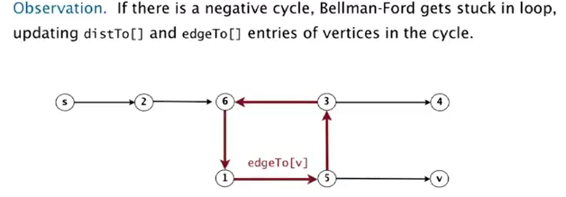

1. Shortest Paths APIs
context: directe, weighted graphs.
shortest path variants
in terms of vertices:
- source-sink: form one vertex to another
- single source: from one vertex to all others (considered in this lecture)
- all pairs
constraints on edge weights:
- nonnegative weights
- arbitary weights
- eculidean
cycles:
- no directed cycles
- no negative cycles
APIs
for weighted directed edge:
public class DirectedEdge{
DirectedEdge(int v, int w, double weight);
int from();
int to();
double weight();
}
for edge-weighted digraph:
public class EdgeWeightedDigraph{
private final Bag<DirectedEdge>[] adj;
EdgeWeightedDigraph(int V);
void addEdge(DirectedEdge e);
Iterable<DirectedEdge> adj(int v);
int V();
}
for single source shortest-path:
public class SP{
SP(EdgeWeightedDigraph G, int s);//s is the source node
double distTo(int v);//dist from s to v
Iterable<DirectedEdge> pathTo(int v);// shortest path from s to v
}
2. Shortest path properties
goal: single-source shortest path
prop. a shortest-path-tree (SPT) exists.
这个结论以前没见过... 不太evident吧... 没有太想明白

⇒ consequence: can represent this SPT by 2 vertex-indexted arrays:
double distTo[v]= shortest path length s → vDirectedEdge edgeTo[v]= last edge to v in shortest path,edgeTo[s] = null

private int distTo[] = new int[V];
private DirectedEdge edgeTo[] = new DirectedEdge[V];
public double distTo(int v){
return this.distTo[v];
}
public Iterable<DirectedEdge> pathTo(int v){
Stack<DirectedEdge> path = new Stack<DirectedEdge>();
for(DirectedEdge e = this.edgeTo[v]; e!=null; e = edgeTo[e.from])
path.push(e);
return path;
}
Edge relaxation
dynamic prog:
- distTo[v] = length of known shortest path from s to v
- distTo[w] = length of known shortest path from s to w
- edgeTo[w] = last edge in the known shortest path form s to w
(consider edges one by one)
def. edge e = v-->w relaxes if e.weight+distTo[v] < distTo[w]. → update distTo[w] and edgeTo[w].

private void relax(DirectedEdge e){
int v = e.from(), w = e.to();
if(distTo[w]>distTo[v]+e.weight()){
distTo[w] = distTo[v]+e.weight();
edgeTo[w] = e;
}
}
optimality conditions
prop. optimality conditions
distTo[] is the solution iff:
- distTo[s] = 0
- distTo[v] is the weight of some path from s to v
- for any edge e = v → w, distTo[w] <= distTo[v]+e.weight()
Generic algo
just relax all edges...

prop. the above generic algo gives the SPT from s.
implementations of the algo:
- Dijkstra (nonnegative edge)
- Topological sort (!) (no directed cycles)
- Bellman-Ford (no negative directed cycles)
3. Dijkstra's Algorithm
(non-negative edges)
- consider vertices in increasing distance from s.*
- add vertex to the SPT, relax all edges from that vertex.
- each time: take the closest vertex to s that is not in the SPT (ie. whose dist is not determined yet), add the vertex, and relax all its outgoing edges.
prop. Dijkstra works.
pf.
each edge e = v → w is considered exactly once (when vertex v is added to SPT). distTo[w] <= distTo[v]+e.weight() after relaxing e
ineq holds until algo terminates
* distTo[w] decrease monotonely,
* distTo[v] will not change because each time we choose distTo[v] smallest, and all edges non-negative.
* CQFD by optimality condition.
implementation
Use an IndexMinPQ to store vertices.
public class DijkstraSP{
private int dist[];
private DirectedEdge edgeTo[];
private IndexMinPQ<Integer,Double> pq;
DijkstraSP(EdgeWeightedDigraph G, int s){
this.dist[] = new int[G.V()];
this.edgeTo[] = new DirectedEdge[G.V()];
this.pq = new IndexMinPQ<Integer,Double>(G.V());
for(int v = 0; v<G.V(); v++) dist[v] = 999999;
dist[s] = 0;
pq.insert(s, 0.0);
while(!pq.isEmpty()){
int v = pq.delMin();
for(DirectedEdge e:G.adj(v))
relax(e);// decrease key or insert vertices to pq
}
}//constructor()
private relax(DirectedEdge e){
int v = e.from(), w = e.to();
if(dist[w]<dist[v]+e.weight()){
dist[w] = dist[v]+e.weight();
edgeTo[w] = e;
if(pq.contains(w)) pq.decreaseKey(w, dist[w]);
else pq.insert(w, dist[w]);
}
}//relax()
}//class
Dijkstra is in fact a Prim algorithm ! Both are algos that compute a spanning tree.
- in Prim: each time takes the vertex closest to the tree (and is for undirected graph).
- in Dijkstra: each time takes the vertex closest to source s (and is for directed graph).

DFS BFS are also computing spanning tree!
...NB!!
complexity
- V insertions to PQ (each vertex is added to the SPT)
- V delMin from PQ
- E decrease key
→ depends on the PQ implementation.
in our implementation, O(ElogV)

4. Edge-Weighted DAGs
in a DAG, it's easier to find the shortest path ?
⇒ yes!
simple algo:
- consider vertices in topological order
- relax outgoing edges form this vertex.
correctness
prop.
topo-sort algo computes SPT in any DAG (even with negative weights) in time O(E+V) (linear time!).
pf.
each edge is relaxed exactely once. distTo[w] <= distTo[v]+e.weight() after relaxing e
ineq holds until the algo terminates because:
* distTo[w] decrease monotonely,
* distTo[v] will not change because of topo-order, no edge pointing to v after v is relaxed.
* CQFD
implementation
public class AsyclicSP{
AsyclicSP(EdgeWeightedDigraph G, int s){
// init dist[] and edgeTo[]...
Topological topo = new Topological(G);
for(int v: topo.order())
for(DirectedEdge e:G.adj(v))
relax(e);
}
}
application
- seam-carving
Resizing images non-uniformly without distortion.

好神奇!
Grid DAG of pixels, edges are pointed to 3 downward neighbors.
横向缩小: 删掉一个"seam"

-
longest path in DAG → just negate all edge weights, as this algo is OK for negative edges.
-
parallel job scheduling

感觉有点运筹的意思, 关键是建立一个DAG, 比较有技巧性:- add source and sink
- split each job to 2 vertices (begin and end)

⇒ use longest path to schedule jobs
5. Negative Weights
只是给所有边增加weight并不能解决负权边问题.

⇒ need a different algo.
prop. SPT exists iff there is no negative cycles.
Bellman-Ford
一句话总结Bellman算法: 每次relax所有的边, 进行V次.

(因为relax k次以后, s到v的最短路径的长度小于等于k.)
prop. Bellman-Ford works, complexity is O(EV).
pf.
after i passes, found shortest path contain at most i edges.
code:
public class BellmanFordSP{
BellmanFordSP(EdgeWeightedDigraph G, int s){
// init dist[] and edgeTo[]...
for(int i=0;i<G.V();i++)
for(DirectedEdge e:G.edges())
relax(e);
}
}
improvement
if dist[v] is not changed during one pasee → no need to relax incoming edges any more.
→ much faster in practice.
FIFO implementation: maintain a queue of vertices whoses dist is changed.
Finding negative cycle
add two method to SP:
boolean hasNegCycle(); Iterable<DirectedEdge> negCycle();

prop.
if a vertex u is updated in phase V, there exists a negative cycle, and can track edgeTo[u] to find the cycle.
原因是最短路径的长度小于V, 如果大于V则说明存在negative cycle.
negative cycle application
arbitrage detection

建模:
graph of currencies, edge weight = exchange weight (complete graph).
⇒ find a cycle whose product of edge is >1.
⇒ take logs to make a shortest-path pb.
⇒ take minus log, then try to find a negative cycle.

NB!!
Summery


Comments !